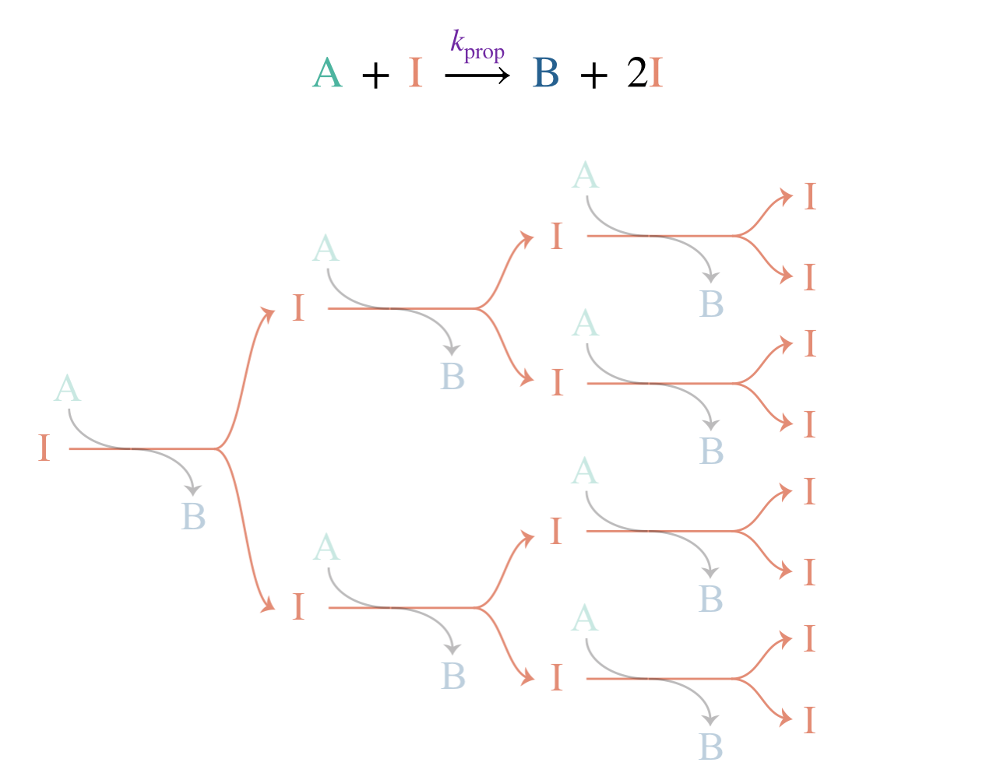
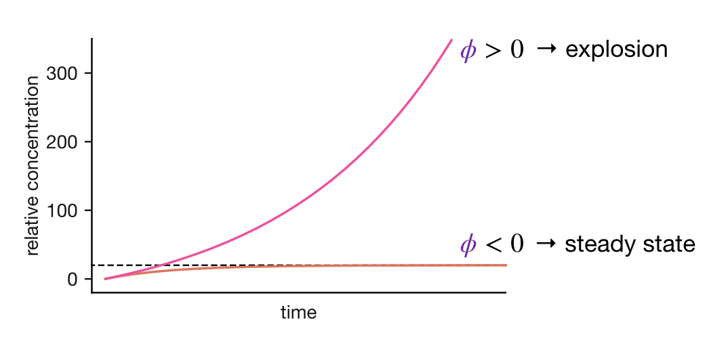
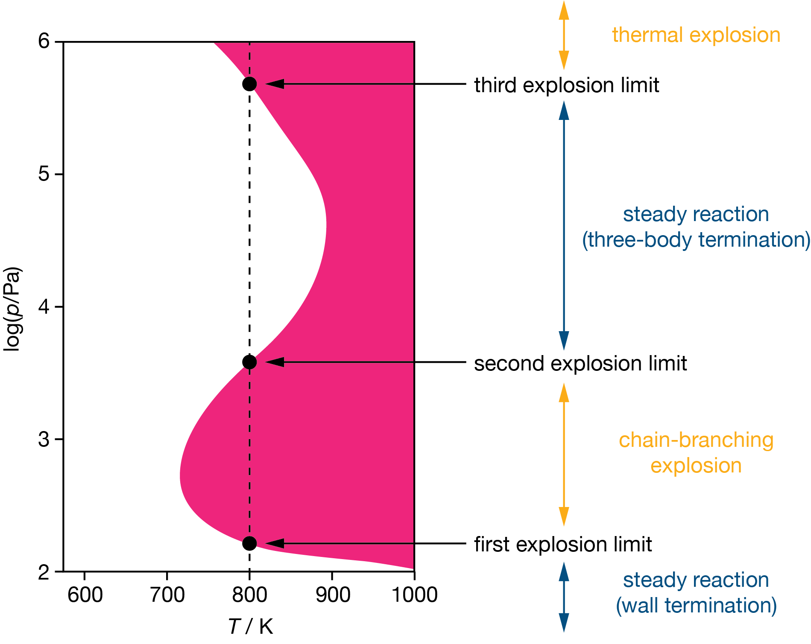

Lecture 10 Feedback, Stability, and Explosions
Some of the mechanisms we have studied (the Lindemann mechanism, enzyme kinetics, H2 + Br2) lead to sets of coupled differential equations that we cannot solve directly. In each case, the steady-state approximation provided a way forward: by assuming that the rates of change of intermediate species are approximately zero, we obtained approximate analytical rate laws in terms of measurable species. These derived rate laws allowed us to understand the concentration dependence and limiting behaviour of these reactions, and in each case the approximate rate law was consistent with the experimental data. But why does a reactive intermediate reach a steady state? And are there circumstances where it does not?
10.1 Why Reactive Intermediates Reach a Steady State
The consecutive reaction A \(\rightarrow\) B \(\rightarrow\) C from Lecture 4 provides a good starting point. The intermediate B is produced by the first step and consumed by the second, giving:
\[\frac{\mathrm{d}[\mathrm{B}]}{\mathrm{d}t} = k_1[\mathrm{A}] - k_2[\mathrm{B}]\]
The first term, \(k_1[\mathrm{A}]\), is the rate at which B is formed; the second, \(k_2[\mathrm{B}]\), is the rate at which B is consumed, and is proportional to \([\mathrm{B}]\) itself. If \([\mathrm{A}]\) changes slowly compared to \([\mathrm{B}]\), we can treat the formation rate as approximately constant at \(k_1[\mathrm{A}]_0\).
At the start of the reaction, \([\mathrm{B}] = 0\). The consumption term \(k_2[\mathrm{B}]\) is zero, so \(\mathrm{d}[\mathrm{B}]/\mathrm{d}t = k_1[\mathrm{A}]_0\). As \([\mathrm{B}]\) grows, the consumption term \(k_2[\mathrm{B}]\) grows with it. Since the formation rate is approximately constant, \(\mathrm{d}[\mathrm{B}]/\mathrm{d}t = k_1[\mathrm{A}]_0 - k_2[\mathrm{B}]\) decreases: \([\mathrm{B}]\) continues to rise, but more and more slowly. Eventually, \(k_2[\mathrm{B}]\) catches up with \(k_1[\mathrm{A}]_0\), the two terms balance, and \(\mathrm{d}[\mathrm{B}]/\mathrm{d}t = 0\): \([\mathrm{B}]\) has reached a steady state.
This steady state is self-correcting. If \([\mathrm{B}]\) were to increase above the steady-state value, \(k_2[\mathrm{B}]\) would exceed the formation rate, making \(\mathrm{d}[\mathrm{B}]/\mathrm{d}t\) negative and pushing \([\mathrm{B}]\) back down. If \([\mathrm{B}]\) were to drop below, \(k_2[\mathrm{B}]\) would be smaller than the formation rate, making \(\mathrm{d}[\mathrm{B}]/\mathrm{d}t\) positive and pushing \([\mathrm{B}]\) back up. In both cases, the system corrects itself because the consumption term \(k_2[\mathrm{B}]\) is proportional to \([\mathrm{B}]\): any increase in \([\mathrm{B}]\) strengthens the opposing term, pulling the system back towards balance. This self-correcting behaviour is called negative feedback.
10.2 The General Feedback Equation
The same mathematical structure applies more generally. For any reactive intermediate I, we can separate the terms in \(\mathrm{d}[\mathrm{I}]/\mathrm{d}t\) into those that do not depend on \([\mathrm{I}]\) and those that do. The terms that do not depend on \([\mathrm{I}]\) we group into a formation rate \(\nu_\mathrm{f}\). This rate may depend on other concentrations, but provided those change slowly compared to the timescale on which \([\mathrm{I}]\) adjusts, we can treat \(\nu_\mathrm{f}\) as approximately constant. The terms that do depend on \([\mathrm{I}]\) we collect into a single parameter \(\phi\), giving:
\[\begin{equation} \frac{\mathrm{d}[\mathrm{I}]}{\mathrm{d}t} = \nu_\mathrm{f} + \phi[\mathrm{I}] \tag{10.1} \end{equation}\]
This is the feedback equation. The feedback parameter \(\phi\) captures the net effect of every process whose rate depends on \([\mathrm{I}]\). When \(\phi < 0\), these processes remove intermediates faster as \([\mathrm{I}]\) grows: negative feedback, as we saw for the consecutive reaction.
Eqn. (10.1) can be solved by separation of variables (the full derivation is given in the Appendix). Starting from \([\mathrm{I}]_0 = 0\), the solution is:
\[\begin{equation} [\mathrm{I}]_t = \frac{\nu_\mathrm{f}}{\phi}\left(\mathrm{e}^{\phi t} - 1\right) \tag{10.2} \end{equation}\]
The behaviour of this equation depends entirely on the sign of \(\phi\). When \(\phi < 0\), the exponential \(\mathrm{e}^{\phi t}\) decays to zero with a characteristic timescale \(\tau = 1/|\phi|\), and as \(t \rightarrow \infty\) the intermediate concentration approaches a constant value:
\[\begin{equation} [\mathrm{I}]_\mathrm{ss} = \frac{\nu_\mathrm{f}}{|\phi|} \tag{10.3} \end{equation}\]
This is the steady state we have relied on throughout the course.
Eqn. (10.2) also gives us a more precise understanding of when the SSA is valid. The timescale \(\tau\) approximately divides the reaction into two regimes. At short times (\(t \lesssim \tau\)), \([\mathrm{I}]\) is still rising towards \([\mathrm{I}]_\mathrm{ss}\) and the SSA does not apply; this is the initial transient we observed in Lecture 5. At long times (\(t \gg \tau\)), \([\mathrm{I}]\) has settled to \(\nu_\mathrm{f}/|\phi|\). In this regime, the SSA is quantitatively accurate provided \(\nu_\mathrm{f}\) changes by only a small fraction of its value over the timescale \(\tau\).
When might we expect this condition to hold? In some cases \(\nu_\mathrm{f}\) changes slowly because the reactant concentrations evolve on a much longer timescale than \(\tau\). This happens when \(|\phi|\) is large, so that the steady state is reached quickly; this is the situation we encountered in Lecture 5.
In enzyme catalysis (Lecture 8), the formation rate of the enzyme–substrate complex depends on \([\mathrm{S}]\) and \([\mathrm{E}]_0\). The total enzyme concentration \([\mathrm{E}]_0\) is conserved because the enzyme is regenerated in each catalytic cycle, and \([\mathrm{S}]\) changes slowly because it is in large excess over \([\mathrm{E}]_0\), so again \(\nu_\mathrm{f}\) is approximately constant over the timescale \(\tau\).
A third case arises when \(\nu_\mathrm{f}\) does not depend on any concentration in the reacting system, so it is genuinely constant rather than just slowly changing. In atmospheric chain reactions (Lecture 9), for example, radicals are generated by photochemical splitting of reservoir species. The rate of this process is set by the solar flux, not by any reactant or product concentration, so \(\nu_\mathrm{f}\) remains constant regardless of how the reaction proceeds.
10.3 From Straight Chains to Branching Chains
In every example so far, \(\phi\) has been negative and the system reaches a steady state. Is that always the case?
In Lecture 9, we studied straight chain reactions such as H2 + Br2 and CFC-catalysed ozone destruction. The general mechanism for a straight chain is:
\[\begin{align*} \text{Initiation:} \quad & \mathrm{A} \xrightarrow{k_\mathrm{i}} \mathrm{I} + \text{products} \\ \text{Propagation:} \quad & \mathrm{I} + \mathrm{A} \xrightarrow{k_\mathrm{p}} \mathrm{I} + \text{products} \\ \text{Termination:} \quad & \mathrm{I} \xrightarrow{k_\mathrm{term}} \text{products} \end{align*}\]
Writing the rate equation for the total radical concentration \([\mathrm{I}]\):
\[\frac{\mathrm{d}[\mathrm{I}]}{\mathrm{d}t} = \underbrace{k_\mathrm{i}[\mathrm{A}]}_{\text{initiation}} + \underbrace{k_\mathrm{p}[\mathrm{A}][\mathrm{I}] - k_\mathrm{p}[\mathrm{A}][\mathrm{I}]}_{\text{propagation (cancels)}} - \underbrace{k_\mathrm{term}[\mathrm{I}]}_{\text{termination}}\]
The propagation terms cancel exactly: each propagation step consumes one radical and produces one replacement, so the total radical count is unchanged. We are left with \(\mathrm{d}[\mathrm{I}]/\mathrm{d}t = k_\mathrm{i}[\mathrm{A}] - k_\mathrm{term}[\mathrm{I}]\), which is the feedback equation with \(\phi = -k_\mathrm{term}\). Since \(k_\mathrm{term} > 0\), the feedback is always negative and the radical population tends towards a steady state. This is why the SSA is appropriate for straight chain reactions such as H2 + Br2 and CFC-catalysed ozone destruction.
Now consider what happens if a propagation step produces more radicals than it consumes:
\[\mathrm{I} + \mathrm{A} \xrightarrow{k_\mathrm{branch}} 2\mathrm{I} + \text{products}\]

Figure 10.1: A branching chain reaction: each propagation step produces two intermediates from one, leading to exponential growth in the radical population.
One radical goes in; two come out (Figure 10.1). This is a branching step, and a chain reaction that includes one or more branching steps is called a branching chain reaction. Propagation no longer conserves the radical population: each branching step creates one additional radical. The rate equation for \([\mathrm{I}]\) now includes an extra term that does not cancel:
\[\frac{\mathrm{d}[\mathrm{I}]}{\mathrm{d}t} = k_\mathrm{i}[\mathrm{A}] + k_\mathrm{branch}[\mathrm{A}][\mathrm{I}] - k_\mathrm{term}[\mathrm{I}]\]
The feedback parameter becomes:
\[\phi = k_\mathrm{branch}[\mathrm{A}] - k_\mathrm{term}\]
The sign of \(\phi\) now depends on which process wins. If termination dominates (\(k_\mathrm{term} > k_\mathrm{branch}[\mathrm{A}]\)), then \(\phi < 0\) and the system tends towards a steady state just like a straight chain. But if branching dominates (\(k_\mathrm{branch}[\mathrm{A}] > k_\mathrm{term}\)), then \(\phi > 0\). What happens then?
10.4 Positive Feedback and Explosions
Eqn. (10.2) is valid for any sign of \(\phi\). When \(\phi < 0\), as before, the system settles to a steady state. When \(\phi > 0\), the opposite happens: the exponential \(\mathrm{e}^{\phi t}\) increases with time. Rather than decaying away, the exponential term drives \([\mathrm{I}]\) upwards, and the rate of increase itself grows as \([\mathrm{I}]\) increases. At long times, \(\mathrm{e}^{\phi t} \gg 1\) and:
\[[\mathrm{I}]_t \approx \frac{\nu_\mathrm{f}}{\phi}\,\mathrm{e}^{\phi t}\]
The intermediate concentration increases exponentially, and so does the reaction rate. There is no steady state — the system runs away. This exponential runaway is an explosion. Figure 10.2 compares the two cases.

Figure 10.2: Solutions to the feedback equation for negative and positive feedback. When \(\phi < 0\) (lower curve), \([\mathrm{I}]\) rises to the steady-state value \(\nu_\mathrm{f}/|\phi|\) and remains there — this is the self-regulating behaviour that underpins the SSA. When \(\phi > 0\) (upper curve), \([\mathrm{I}]\) grows exponentially without bound.
The same mixture of reactants can be safe or explosive, depending on whether conditions favour branching or termination.
You should be able to: Write the general feedback equation \(\mathrm{d}[\mathrm{I}]/\mathrm{d}t = \nu_\mathrm{f} + \phi[\mathrm{I}]\), explain the physical meaning of the feedback parameter \(\phi\), and predict whether a chain reaction will reach a steady state (\(\phi < 0\)) or explode (\(\phi > 0\)) from the relative rates of branching and termination.
10.5 The Hydrogen–Oxygen Explosion
The general framework above predicts two regimes: if \(\phi < 0\) we converge to a steady state; if \(\phi > 0\) we get exponential growth and an explosion. The condition \(\phi = 0\) defines the boundary between these two cases. The H2/O2 system shows that reality can be more complex, because the dominant termination mechanism itself changes with conditions. At \(500\,^\circ\mathrm{C}\), a stoichiometric mixture of hydrogen and oxygen is safe below a few hundred Pa, explodes over a range of intermediate pressures, then becomes safe again at higher pressures — only to become explosive once more at still higher pressures. The system crosses the \(\phi = 0\) boundary not once but twice as pressure increases, and then a third boundary of a completely different character appears at high pressure. Understanding this pattern requires knowing which termination process dominates at different pressures.
10.5.1 The H2/O2 chain mechanism
The detailed mechanism for the reaction of hydrogen with oxygen is complex, involving many elementary steps and several competing pathways. For our purposes, the essential features can be captured by a simplified mechanism involving three radical species; H\(^{\bullet}\), O (atomic oxygen, itself a reactive radical), and OH\(^{\bullet}\); and three key propagation steps:
\[\begin{align*} \mathrm{H}^{\bullet} + \mathrm{O_2} &\xrightarrow{k_\mathrm{b}} \mathrm{OH}^{\bullet} + \mathrm{O} &\qquad &\text{Step 1} \\ \mathrm{O} + \mathrm{H_2} &\xrightarrow{k_\mathrm{b}'} \mathrm{OH}^{\bullet} + \mathrm{H}^{\bullet} &\qquad &\text{Step 2} \\ \mathrm{OH}^{\bullet} + \mathrm{H_2} &\xrightarrow{k_\mathrm{p}} \mathrm{H_2O} + \mathrm{H}^{\bullet} &\qquad &\text{Step 3} \end{align*}\]
The first step is branching: one \(\mathrm{H}^{\bullet}\) produces two new radicals (\(\mathrm{OH}^{\bullet}\) and \(\mathrm{O}\)). The second is also branching: one \(\mathrm{O}\) produces both \(\mathrm{OH}^{\bullet}\) and \(\mathrm{H}^{\bullet}\). The third is ordinary straight propagation (one in, one out), forming the product H2O.
Let us follow one \(\mathrm{H}^{\bullet}\) through a complete cycle. Step 1 consumes this \(\mathrm{H}^{\bullet}\) and produces \(\mathrm{OH}^{\bullet}\) and \(\mathrm{O}\). Step 2 converts \(\mathrm{O}\) into \(\mathrm{OH}^{\bullet} + \mathrm{H}^{\bullet}\). Step 3 converts each of the two \(\mathrm{OH}^{\bullet}\) radicals into \(\mathrm{H}^{\bullet}\). The net result: one \(\mathrm{H}^{\bullet}\) in, three \(\mathrm{H}^{\bullet}\) out (plus \(\mathrm{OH}^{\bullet}\) and \(\mathrm{O}\) consumed within the cycle). The net gain is two \(\mathrm{H}^{\bullet}\) radicals per cycle. The slowest step in this cycle is step 1 (because it requires breaking the strong O=O double bond); this step proceeds at rate \(k_\mathrm{b}[\mathrm{O}_2][\mathrm{H}^{\bullet}]\) and sets the rate at which we cycle through all three steps. The branching contribution to \(\mathrm{d}[\mathrm{H}^{\bullet}]/\mathrm{d}t\) is therefore \(2k_\mathrm{b}[\mathrm{O}_2][\mathrm{H}^{\bullet}]\), and the feedback parameter is:
\[\phi = 2k_\mathrm{b}[\mathrm{O_2}] - k_\mathrm{term}\]
Whether \(\phi\) is positive or negative depends on \(k_\mathrm{term}\), which depends on which termination mechanism is dominant under our particular conditions.
10.5.2 Wall termination at low pressure: the first explosion limit
At low pressures, the primary termination pathway is diffusion of radicals to the vessel walls, where they adsorb and recombine. How quickly radicals diffuse depends on how far they travel between collisions with other gas molecules. At low pressure, where the gas is sparse, a radical can travel a long way before hitting another molecule; the average distance between collisions (the mean free path) is large, so radicals diffuse quickly to the walls and wall termination is fast. As the pressure increases, molecules are packed more closely, the mean free path shrinks, and diffusion to the walls slows. At the same time, the branching rate grows (because \([\mathrm{O_2}]\) increases with pressure). At a critical pressure, branching overtakes wall termination and \(\phi\) crosses zero: the mixture explodes. This is the first explosion limit.
The first explosion limit depends on the vessel: a smaller vessel makes it easier for radicals to reach the walls, so a higher pressure is needed to overwhelm wall termination.
10.5.3 Three-body termination at high pressure: the second explosion limit
One might expect that once the mixture enters the explosive regime, increasing the pressure further would only make matters worse. Instead, a new termination pathway emerges at higher pressures:
\[\mathrm{H}^{\bullet} + \mathrm{O_2} + \mathrm{M} \xrightarrow{k_\mathrm{tb}} \mathrm{HO_2}^{\bullet} + \mathrm{M}\]
As we discussed in Lecture 7, true simultaneous three-body collisions are implausible. This step instead proceeds via an excited \(\mathrm{HO_2}^{\bullet *}\) complex that must transfer its excess energy to a third body M (any molecule present in the gas mixture) before it redissociates. The overall kinetics are third-order, and the step is conventionally written as a single termolecular reaction. The product \(\mathrm{HO_2}^{\bullet}\) does not participate efficiently in the branching steps above, so this step effectively removes a radical from the branching cycle.
The rate of this step depends on the concentrations of both \(\mathrm{O_2}\) and M, both of which increase with pressure. As a result, three-body termination accelerates with pressure faster than branching does (which depends on \([\mathrm{O_2}]\) alone). At sufficiently high pressure, three-body termination overtakes branching: \(\phi\) crosses zero again and the mixture becomes safe. This is the second explosion limit.
10.5.4 The third explosion limit and thermal runaway
At still higher pressures, the mixture explodes again, but for a fundamentally different reason. Above the second limit, three-body termination suppresses the fast branching cycle, but the slower reactions involving \(\mathrm{HO_2}^{\bullet}\) (such as \(\mathrm{HO_2}^{\bullet} + \mathrm{H_2} \rightarrow \mathrm{H_2O_2} + \mathrm{H}^{\bullet}\), followed by thermal decomposition of H2O2) continue, and their rates increase with pressure. These reactions are exothermic: they release heat. At high enough pressure, the rate of heat production exceeds the rate of heat loss through the vessel walls, and the temperature begins to rise. A higher temperature accelerates the reactions further, producing even more heat. This positive feedback loop (between reaction rate and temperature, rather than between reaction rate and radical concentration) leads to thermal runaway and a thermal explosion.
The third explosion limit is therefore distinct in nature from the first and second. The first two limits are chain-branching explosion limits: they arise from the competition between radical multiplication and radical removal, and correspond to \(\phi = 0\). The third limit is a thermal explosion limit: it arises from the competition between heat production and heat dissipation.
10.5.5 The explosion diagram
Figure 10.3 shows the resulting pattern in pressure–temperature space: a characteristic Z-shaped boundary separating safe and explosive regions. Below the first limit, wall termination dominates and the mixture is safe. Between the first and second limits, branching dominates and the mixture explodes. Between the second and third limits, three-body termination restores safety. Above the third limit, thermal runaway causes explosion again.
How do these limits shift with temperature? The key branching step (H\(^{\bullet}\) + O2 \(\rightarrow\) OH\(^{\bullet}\) + O) involves breaking the strong O=O double bond, so it has a substantial activation energy (approximately \(70\,\mathrm{kJ\,mol}^{-1}\)). Its rate therefore increases steeply with temperature. Wall termination depends on how quickly radicals diffuse to the walls, which increases only weakly with temperature. Three-body recombination has no energy barrier and its rate actually decreases slightly with temperature, because the excited complex is more likely to redissociate before it can be stabilised. The branching step therefore accelerates much more steeply with temperature than either termination process, shifting \(\phi\) towards more positive values at any given pressure.
For the first limit, this means branching overtakes wall termination at a lower pressure, so the limit moves down. For the second limit, the effect is opposite: because branching is now faster, a higher pressure is needed for three-body termination to compensate, so the limit moves up. The explosive region between the first and second limits therefore widens with increasing temperature. The third limit moves in the opposite direction — to lower pressures — because faster exothermic reactions produce heat more rapidly, and a lower pressure is sufficient to tip the heat balance towards thermal runaway.

Figure 10.3: Explosion limits for the H\(_2\)/O\(_2\) system in pressure–temperature space. Shaded regions are explosive; unshaded regions support steady reaction. The dashed line illustrates the sequence of regimes encountered at a fixed temperature as pressure increases.
You should be able to: Given a chain reaction mechanism with initiation, branching, and termination steps, write the feedback equation for the reactive intermediate, identify the feedback parameter \(\phi\), and predict the conditions (concentration, pressure, temperature) under which the reaction will reach a steady state or become explosive. Explain why wall termination dominates at low pressure and three-body termination dominates at high pressure, and relate this to the first and second explosion limits.
We opened this lecture with two questions: why does the SSA work, and are there circumstances where it does not? The feedback equation answers both. Negative feedback, driven by consumption terms that grow with \([\mathrm{I}]\), is what pulls reactive intermediates towards a steady state and makes the SSA valid. Branching chain reactions show that this outcome is not guaranteed: when branching outpaces termination, the same feedback structure produces exponential runaway rather than steady-state control.
10.6 Key Concepts
- The steady-state approximation works because reactive intermediates experience negative feedback: the rate of consumption is proportional to the intermediate concentration, so the system self-corrects towards a steady state.
- The feedback equation \(\mathrm{d}[\mathrm{I}]/\mathrm{d}t = \nu_\mathrm{f} + \phi[\mathrm{I}]\) describes the evolution of reactive intermediates. The feedback parameter \(\phi\) determines whether the intermediate population is controlled (\(\phi < 0\)) or runs away (\(\phi > 0\)).
- The general solution \([\mathrm{I}]_t = (\nu_\mathrm{f}/\phi)(\mathrm{e}^{\phi t} - 1)\) predicts both steady-state behaviour (\(\phi < 0\), \([\mathrm{I}] \rightarrow \nu_\mathrm{f}/|\phi|\)) and explosive runaway (\(\phi > 0\), exponential growth) within a single equation. The SSA is valid when \(\phi < 0\) and \(|\phi|\) is large, so the intermediate reaches its steady state quickly; positive feedback (\(\phi > 0\)) represents the breakdown of the SSA.
- For straight chains, \(\phi = -k_\mathrm{term} < 0\): propagation conserves the radical population, and termination provides negative feedback. The SSA is always valid.
- For branching chains, \(\phi = k_\mathrm{branch}[\mathrm{A}] - k_\mathrm{term}\): the sign depends on the competition between branching (which multiplies intermediates) and termination (which removes them). The same mixture can be safe or explosive depending on conditions.
- Explosion limits correspond to the condition \(\phi = 0\). In the H2/O2 system, wall termination (\(k_\mathrm{wall} \propto 1/P\)) dominates at low pressure and three-body termination (\(k_\mathrm{three\text{-}body} \propto P^2\)) dominates at high pressure, creating the first and second explosion limits.
- The third explosion limit arises from thermal runaway (heat production exceeds heat loss) rather than chain branching — a fundamentally different mechanism.